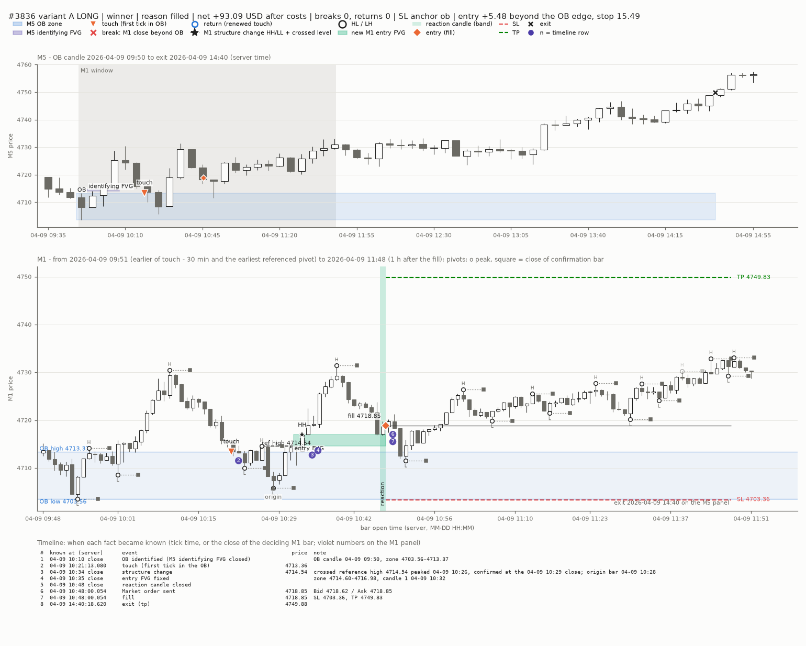
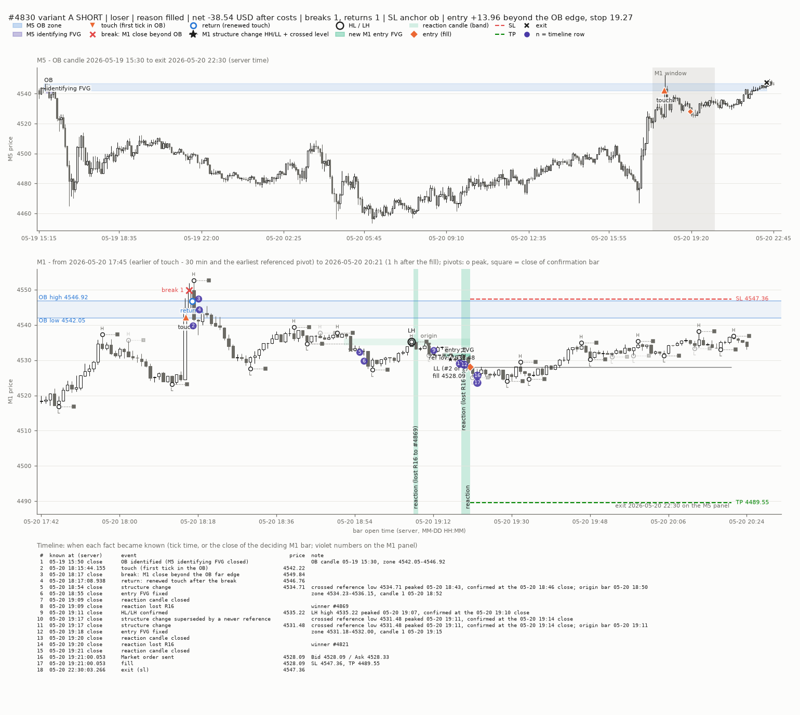
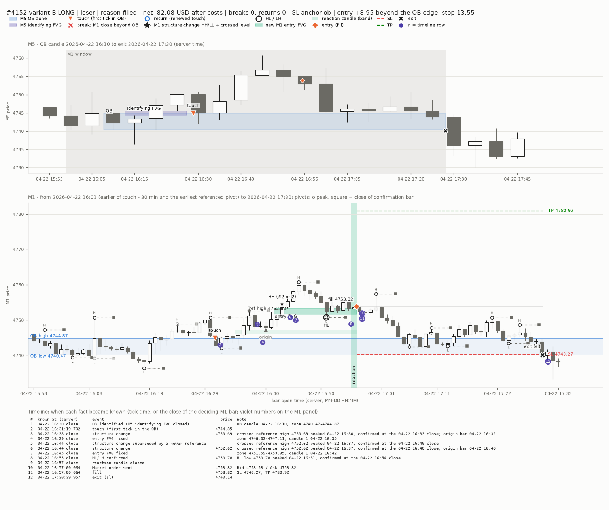
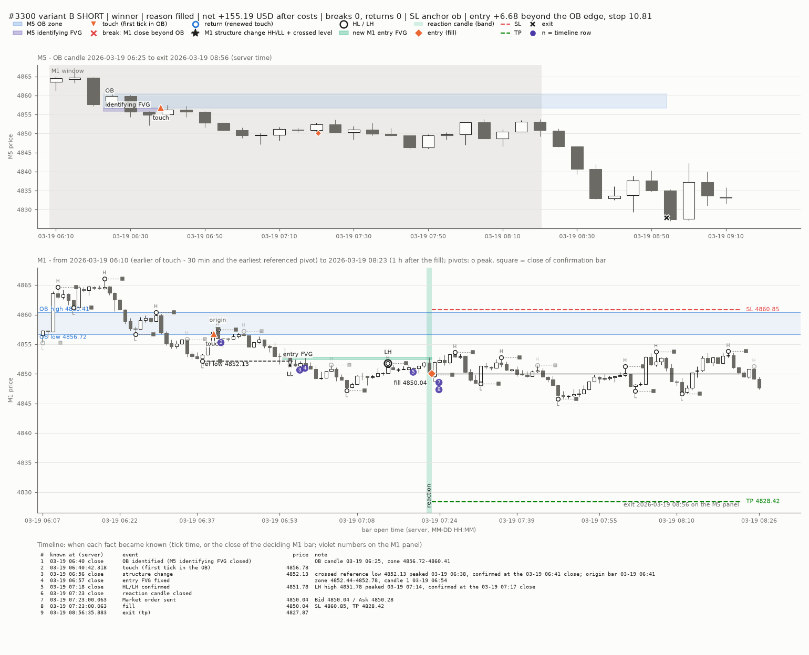
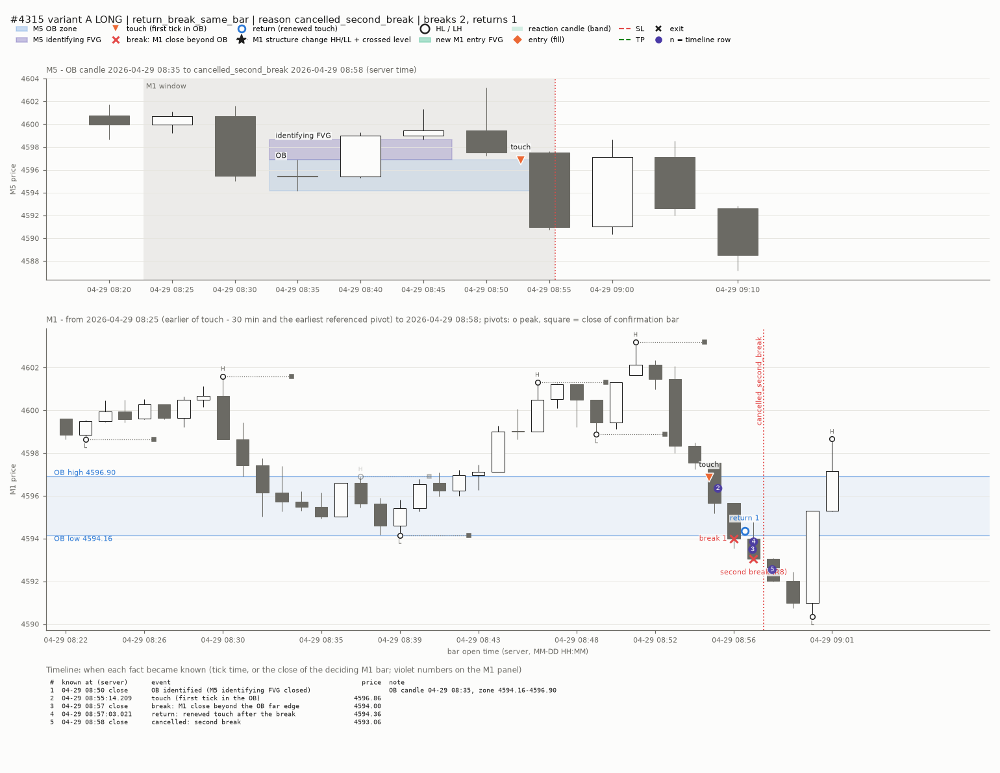
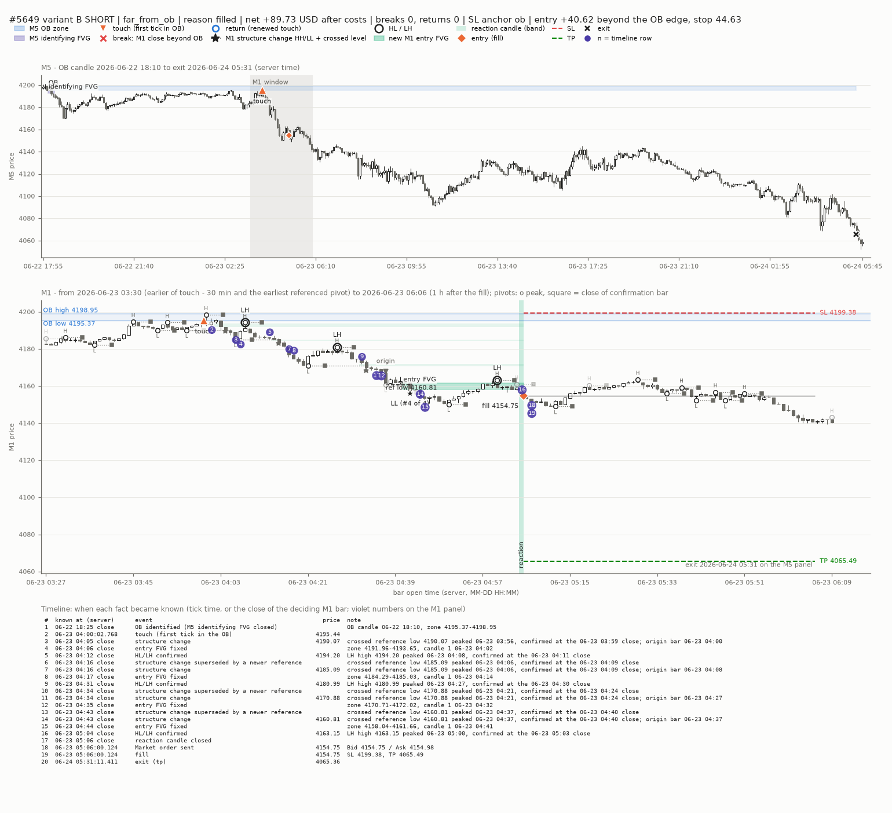
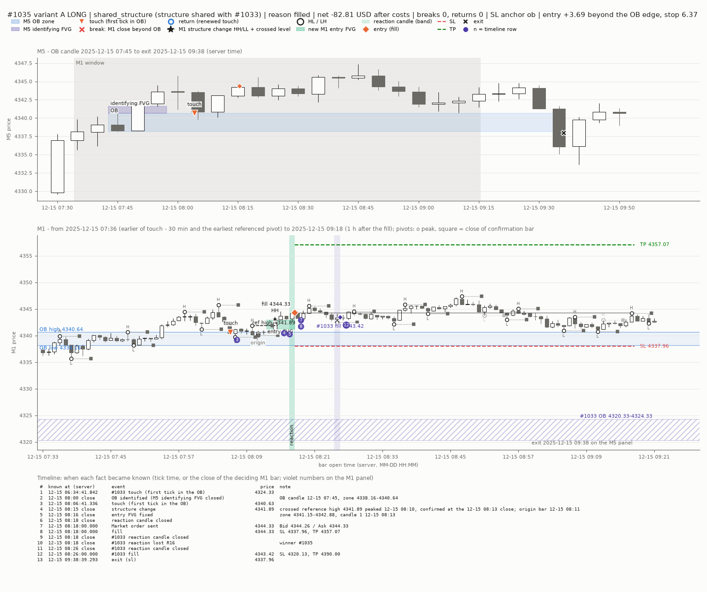
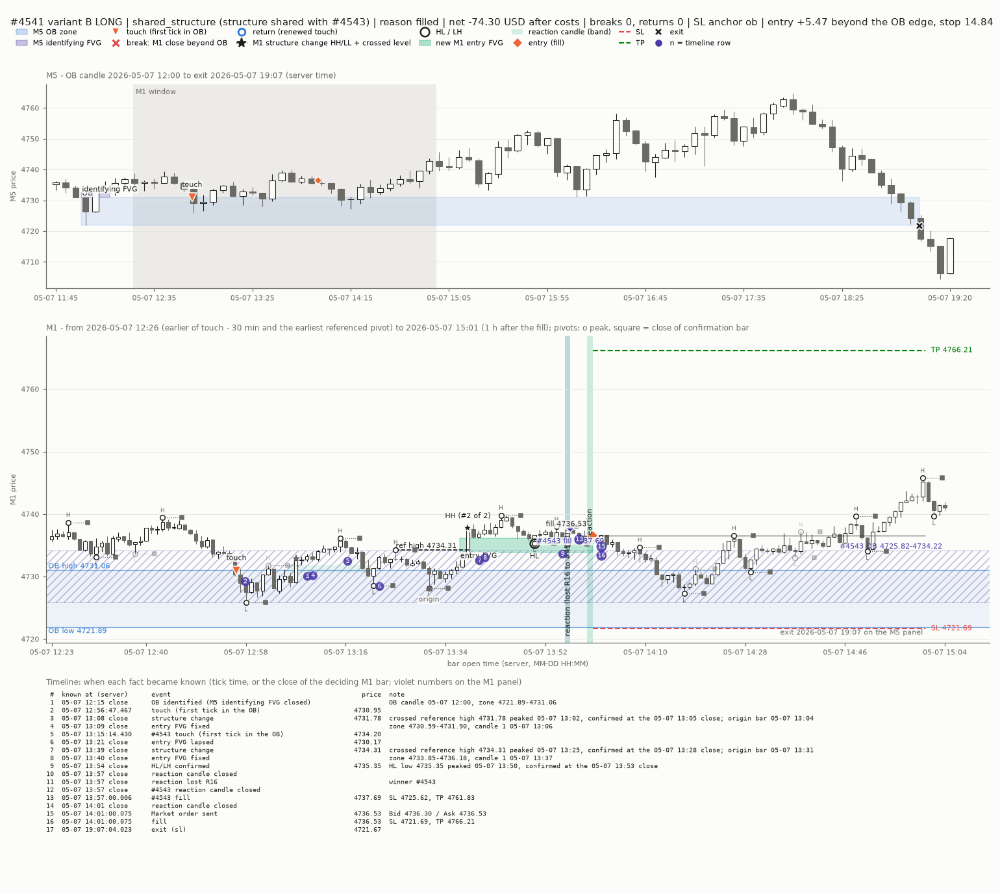

Pilot Dec 2025 - Jul 2026. Net results in the titles are descriptive only.
| M5 OB zone | blue band (M5 box from the OB candle; on M1 the lines 'OB high' / 'OB low') |
| M5 identifying FVG | violet box on the M5 panel |
| touch | orange triangle: first tick that reached the OB (time in timeline) |
| break | red x 'break n': an M1 close beyond the OB far edge |
| return | blue ring 'return n': renewed touch after a break |
| second break (R8) | red x 'second break (R8)' and the red dotted line 'cancelled_second_break' |
| M1 structure change | black star 'HH' / 'LL' on the breaking bar and the dashed line 'ref high/low' = crossed pivot level; 'origin' = lowest low / highest high of the move; faint stars = earlier, superseded structure changes |
| HL / LH | black ring 'HL' / 'LH' on its pivot (variant B needs it; in A it only feeds the stop) |
| new M1 entry FVG | aqua box 'entry FVG' (faint aqua = earlier FVGs that lapsed or were replaced) |
| reaction candle | vertical aqua band 'reaction'; '(lost R16 to #n)' = another setup took that candle |
| entry | orange diamond 'fill <price>'; on the M5 panel a small orange diamond |
| SL / TP | red / green dashed lines with their price on the right |
| exit | black X; if the trade ran longer than the M1 window: 'exit ... on the M5 panel' |
| other OB on the same structure | violet hatched band '#n OB', violet diamond '#n fill', violet band at its reaction candle (shared_structure charts only) |
| pivots | small ring = pivot peak, small grey square = close of its confirmation bar (N = 3), dotted between |
| timeline | table under the panels: when each fact became known; violet numbers on the M1 panel = row |
A long: OB touch, HH, new M1 FVG, reaction candle, entry, TP

A short: break and return, LL, R16 losses on two reaction candles, entry on the third, SL

B long: HH, HL confirmed, reaction, entry; stop from the OB

B short: LL, LH confirmed, reaction, entry, TP

Return and second break in the same M1 bar: cancellation (R8)

Entry about 40 USD beyond the OB after four structure changes; wide stop

Two OBs on one structure: #1035 and #1033 (OB about 16 USD lower), separate reaction candles

Two overlapping OBs on one structure: #4541 and #4543, entries 4 minutes apart
